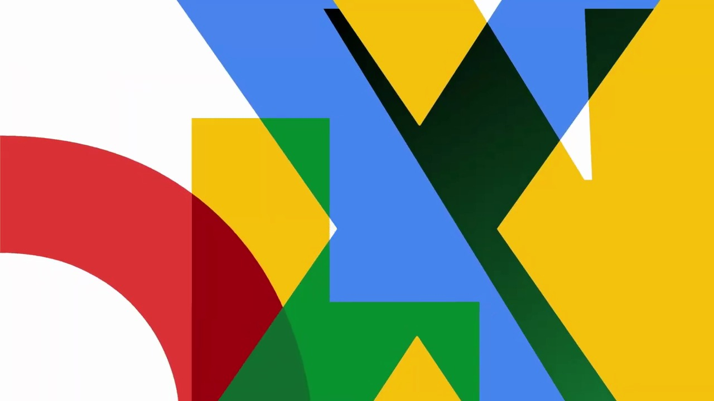
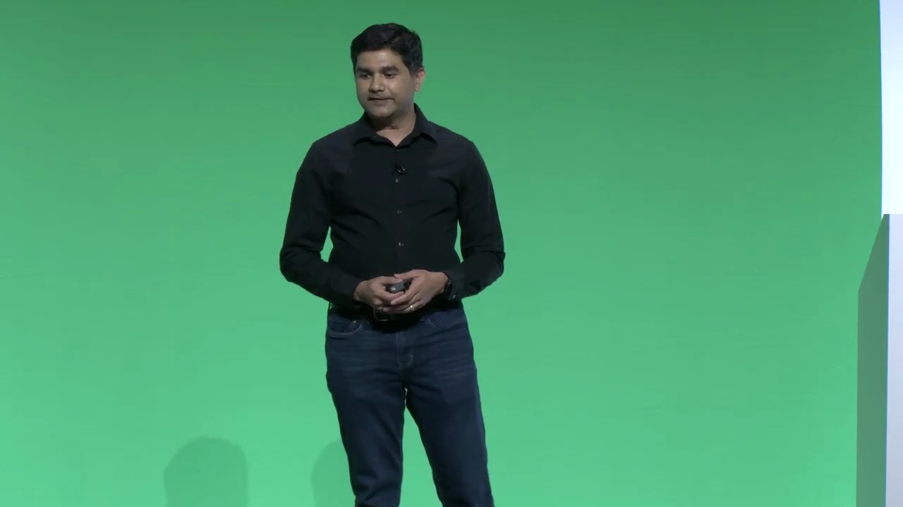
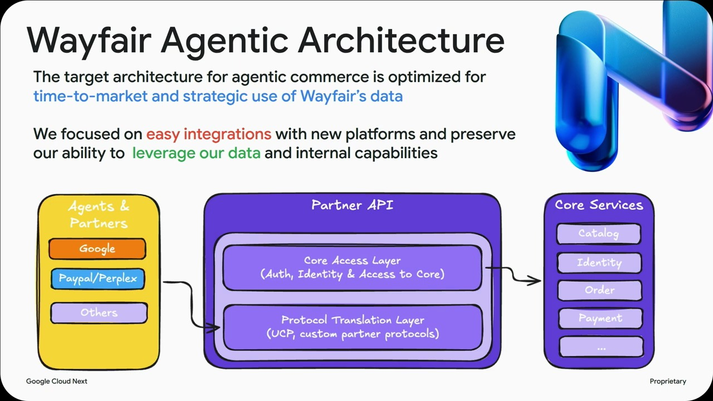
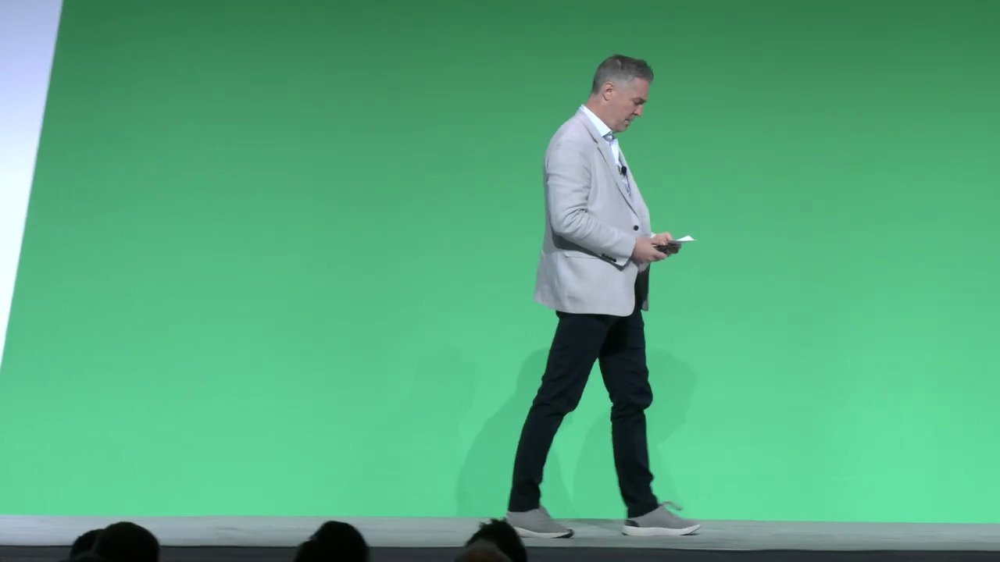
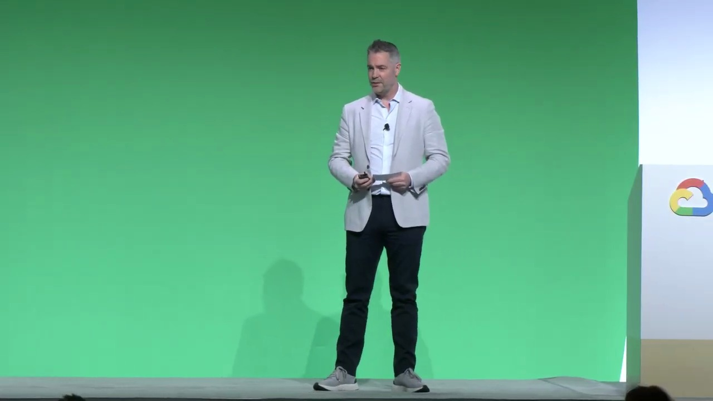

Key Moments





Summary & Script
Agentic commerce: Transform the shopping experience with Google agents and open standards
Source: https://www.youtube.com/watch?v=GNlWClpVtcQ
Video ID: GNlWClpVtcQ
Overview
The session introduces Agentic Commerce, showing how large language models and Google‑hosted agents can transform product discovery, purchasing, and payment flows. Jesse (AI Incubation Lead, Google Cloud) outlines the market opportunity, walks through Google’s tooling (Gemini Enterprise, Shopping Agent, Universal Commerce Protocol UCP, and Agent Payments Protocol AP2), and shares real‑world examples from Wayfair and Fiserv on scaling product catalogs and secure checkout.
Topics Covered
- Why agents matter for retail – shoppers are already using AI for discovery; LLMs compress search, filters, reviews, and specifications into a single conversational thread, driving higher intent and faster checkout.
- Gemini Enterprise for Customer Experience (GECX) – a managed suite that lets brands embed Gemini‑powered AI (product discovery, support, commerce) on their own properties.
- Shopping Agent (preview) – a Google‑managed conversational shopping assistant that handles multimodal queries, curates personalized selections, manages carts, and executes consent‑based purchases.
- Open standards: Universal Commerce Protocol (UCP) – a vendor‑agnostic schema for end‑to‑end commerce (catalog, cart, checkout, order, identity linking, extensions) that works across AI surfaces (Gemini, AI‑mode search, third‑party agents).
- Agent Payments Protocol (AP2) – adds tamper‑proof mandates and tokenized checkout to protect against hallucinations, fraud, and chargebacks in agent‑driven transactions.
- Ecosystem architecture – four actors (agent platform, merchant‑of‑record, credential provider, payment service provider) and layered stack (service, common, capabilities, extensions, transport).
- Customer success stories – Wayfair’s onboarding of 30 M products via agent services; Fiserv’s integration of secure tokenized payments for agent commerce.
- Open‑source commitment – UCP and AP2 are publicly available (ucp.dev, GitHub) to ensure interoperability and avoid vendor lock‑in.
Key Takeaways
- AI agents can collapse the traditional e‑commerce funnel, turning fragmented browsing into a single, intent‑driven conversation.
- Retailers need well‑structured, AI‑ready catalogs and tokenized checkout infrastructure to succeed in the agentic channel.
- Google’s Shopping Agent (preview) provides a ready‑to‑deploy, consent‑based assistant that can handle complex, multimodal purchase requests.
- UCP offers a universal, open‑source commerce language that abstracts away custom integrations and supports any vertical (future extensions: groceries, travel, etc.).
- AP2 secures agent‑driven payments with tamper‑proof mandates, reducing risks of hallucinated pricing or fraudulent transactions.
- The approach is vendor‑agnostic: businesses can embed agent commerce on any surface without lock‑in, using standard transports (REST/JSON, MCP, A2A, iframe).
- Early adopters like Wayfair and Fiserv demonstrate that large‑scale product onboarding and secure payments are already feasible.
Notable Quotes
- “LLMs can help us sift through large amounts of data as well as constraints and preferences, and they can help us organize information from many different places, and ultimately help by driving decision.”
- “40% of all AI‑driven e‑commerce sessions land directly on product‑detail pages, indicating AI is actually helping develop a fully formed purchase intent.”
- “We built UCP with industry leaders so it isn’t a Google‑only solution—it’s an open, transparent protocol anyone can adopt.”
- “Agents break that fundamental trust barrier; AP2 restores it with tamper‑proof mandates and tokenized checkout.”
Podcast Script
JORDAN: Hey everyone, welcome back to the show! I’m Jordan, and I’m here to unpack the nuts and bolts of today’s topic.
MIKE: And I’m Mike—ready to explore how all this AI‑driven commerce actually lands in shoppers’ carts and our everyday lives.
JORDAN: We’ve just listened to Jesse’s breakout on “agenda commerce” from Google Cloud. He kicked things off with a personal story about buying a cargo box using Gemini, the new LLM.
MIKE: Yeah, that was a neat illustration—how an AI can take a mountain of constraints—budget, fit, safety—and spit out the perfect product in seconds. It really puts the “assistant” idea into practice.
JORDAN: The data backs it up too. Research points to a ten‑fold jump in brand discovery via LLMs in 2025, with 30 % of shoppers starting product hunts with AI. That’s a massive shift from traditional search.
MIKE: And those stats translate into real dollars—40 % of AI‑driven sessions land directly on product detail pages, meaning the AI is already creating purchase intent.
JORDAN: Jesse framed the opportunity as meeting shoppers where they already are: the conversational AI surface. But he warned that brands need to optimize catalogs so agents can “safely discover and transact.”
MIKE: Which brings us to the payment side of the equation—if the AI can recommend, it also needs to close the loop securely. That’s where tokenized checkout and the new Agent Payments Protocol (AP2) come in.
JORDAN: Let’s break down the two core protocols Jesse mentioned: UCP—Universal Commerce Protocol—and AP2. UCP is an open‑source schema that standardizes how agents talk to back‑ends, covering everything from catalog to order tracking.
MIKE: The beauty of UCP is that it’s vendor‑agnostic. Retailers can keep their own payment providers and digital wallets, while still plugging into any AI surface—whether it’s Gemini, AI‑mode search, or a custom chatbot.
JORDAN: And because it’s built on layers—services, common, capabilities, extensions, and transport—it can evolve. Today we have catalog, cart, checkout, order, and identity linking; tomorrow we could add travel or groceries as verticals.
MIKE: Right, the “extensions” like discounts and fulfillment act like decorators, so you don’t have to hard‑code them into the core flow. That keeps the system flexible for seasonal promos or last‑minute deals.
JORDAN: On the payment side, AP2 tackles the trust problem. Agents could hallucinate prices or intents, so AP2 uses tamper‑proof mandates and tokenized credentials to verify every transaction.
MIKE: It’s basically the modern version of the early days of e‑commerce, when we were all wary of typing our card numbers online. AP2 gives shoppers that same confidence, but in a conversational context.
JORDAN: Jesse also highlighted two real‑world pilots: Wayfair onboarding 30 million products across multiple AI services, and Fiserv integrating secure tokenized checkout into their fintech stack.
MIKE: Those case studies show the scalability. If Wayfair can handle tens of millions of SKUs and still deliver instant recommendations, small retailers can leverage the same protocols without reinventing the wheel.
JORDAN: So, to sum up, agenda commerce is about three things: an AI that can understand complex constraints, an open standard like UCP that lets any retailer plug in, and a secure payment layer via AP2.
MIKE: And the payoff? Faster, more personalized shopping journeys that collapse the traditional funnel into a single, conversational interaction—plus a safer checkout for everyone.
JORDAN: That’s a lot of moving parts, but the open‑source approach means developers can contribute, iterate, and avoid lock‑in while pushing the ecosystem forward.
MIKE: Absolutely. If you’re a retailer or a payment provider, the invitation is clear: get your catalog API ready, adopt UCP, and start testing AP2‑enabled agents. The future shoppers are already waiting.
JORDAN: Thanks for joining us, everyone. We hope you’ve gotten a clearer picture of how AI agents are reshaping e‑commerce from discovery to payment.
MIKE: Stay curious, keep experimenting with those AI tools, and we’ll see you next time. Bye!